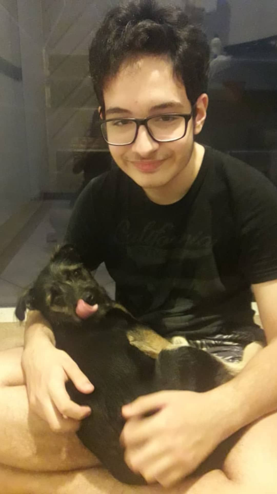
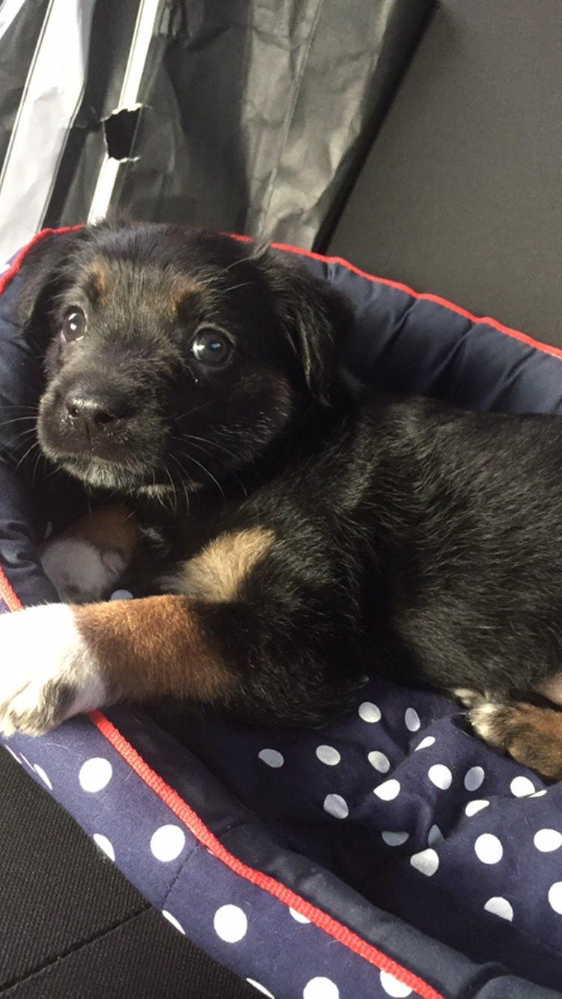
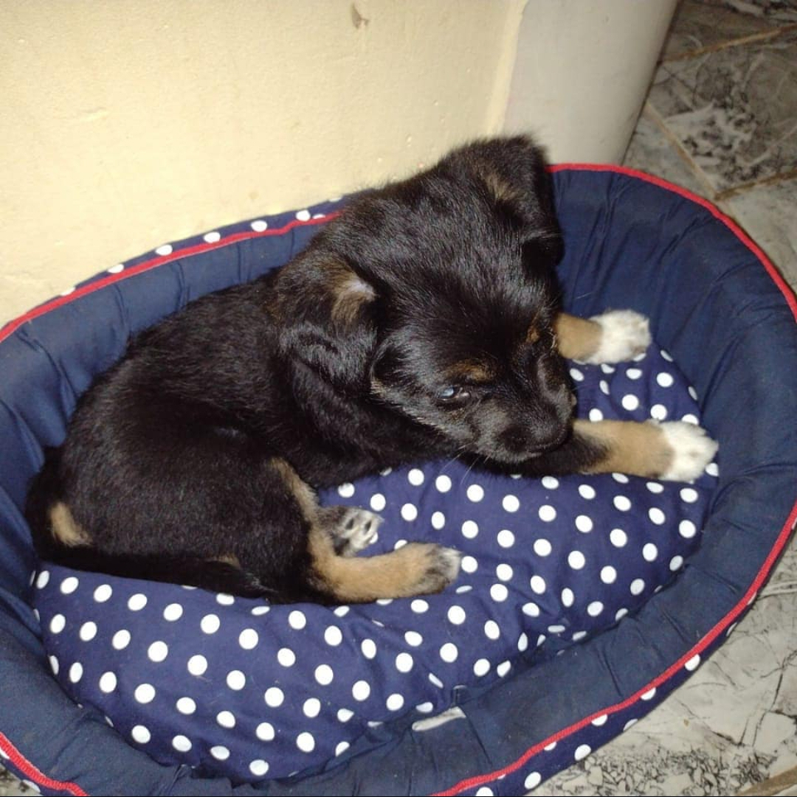
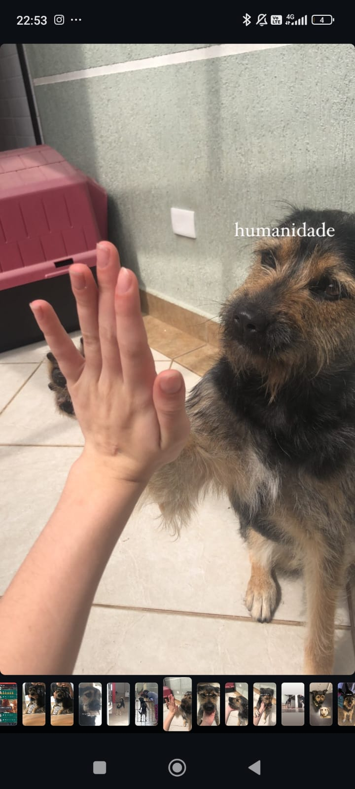
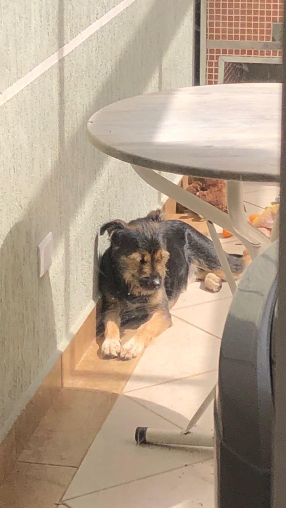

♡ · ♡ · ♡
Algumas passagens duram pouco, mas deixam marcas que ficam para sempre.
A Amora apareceu em nossas vidas em uma situação muito delicada. Nós a encontramos na rua e, ao percebermos que ela precisava de ajuda, minha mãe e eu decidimos tentar acolhê-la. Durante esse processo, descobrimos que uma mulher dizia ser responsável por ela. Depois de conversarmos e conseguirmos sua autorização, finalmente pudemos levar a Amora para casa.

Aos poucos, ela foi conquistando um espaço muito especial em nossos corações. Queríamos oferecer a ela todo o carinho, cuidado e segurança que merecia. Mas, infelizmente, um dia a Amora acabou fugindo e se perdeu.
Desde então, ficou a saudade e a esperança de que ela esteja bem. Mesmo com tudo o que aconteceu, sua passagem por nossas vidas deixou lembranças que nunca vamos esquecer. A Amora nos ensinou que acolher um animal é também criar um vínculo que permanece, independentemente do tempo.


